PART A1: VISUALIZING TRAINING & SAMPLING
1.1 Forward Process & Noisy Inputs
Flow matching defines a continuous path between Gaussian noise $x_0 \sim \mathcal{N}(0, \mathbf{I})$ and clean images $x_1$. Using linear optimal-transport (OT) interpolation, intermediate noisy states $x_t$ at time $t \in [0, 1]$ are generated via:
$$x_t = (1 - t)\epsilon + t x_1, \quad \epsilon \sim \mathcal{N}(0, \mathbf{I})$$
At $t = 0$, $x_t$ is pure Gaussian noise, while at $t = 1$, $x_t$ is the clean original image.
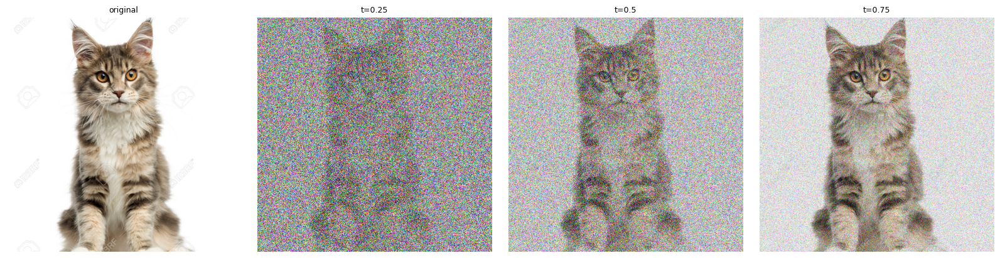
Forward Noising Process
(Original $x_1$, $t=0.25$, $t=0.50$, $t=0.75$)
1.2 Classical Denoising (Gaussian Blur Baseline)
As a baseline, we attempt classical denoising using Gaussian blur. Since signal amplitude is scaled down by $t$, we first restore signal amplitude by dividing by $t$, and then apply a Gaussian filter $G_\sigma$:
$$\widehat{x}_1^{\text{blur}} = G_\sigma\left(\frac{x_t}{t}\right)$$
While Gaussian blur suppresses zero-mean high-frequency noise, it fails to recover structural detail at high noise levels ($t = 0.25$) because blurring destroys high-frequency edge information.
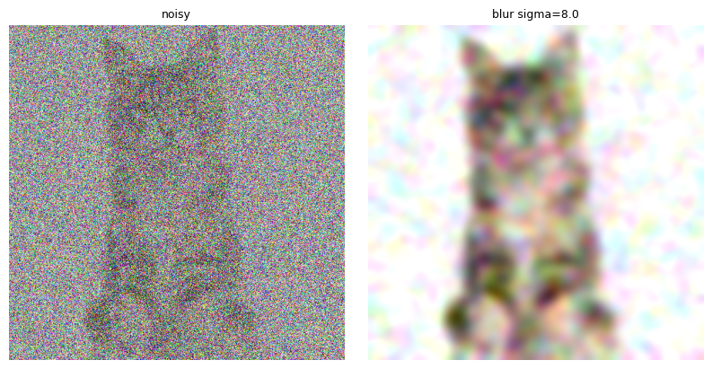
Gaussian Blur for $t=0.25$
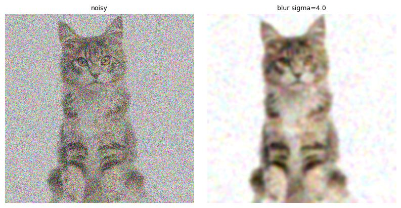
Gaussian Blur for $t=0.50$
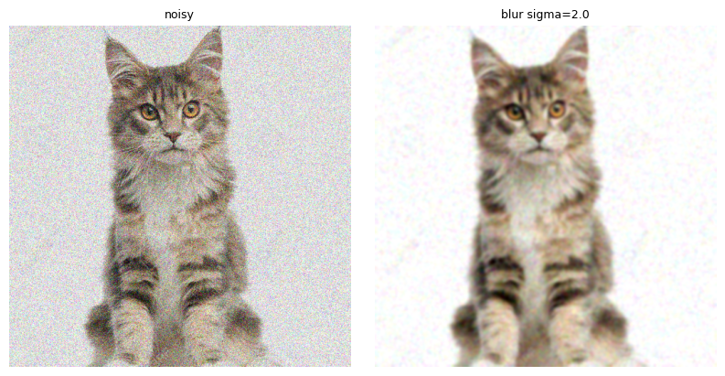
Gaussian Blur for $t=0.75$
1.3 One-Step Denoising with Flow Model
Using the pretrained flow model velocity prediction $v_\theta(x_t, t, c)$ with prompt "a high quality photo", we extrapolate directly to the clean endpoint in a single step:
$$\widehat{x}_1 = x_t + (1 - t)v_\theta(x_t, t, c)$$
1.4 Visualizing Velocity & Error Heatmaps
We compare the model's predicted update $(1-t)\widehat{v}_t$ against ground-truth update $(1-t)v_{\text{gt}} = x_1 - x_t$.
The spatial RMS error across RGB channels is calculated as:
$$E_t = \sqrt{\text{mean}_{\text{RGB}}\left(\left[(1-t)(\widehat{v}_t - v_{\text{gt}})\right]^2\right)}$$
The error heatmaps show that prediction errors concentrate along the cat’s contours and in its fur texture, where most of the fine detail lives.
The plain white background has almost no error. Error is largest at t = 0.25 and shrinks as t increases.
At larger t the noisy input already contains most of the image, so the model only has to predict a small remaining update.
1.5 Iterative Denoising with Euler Integration
Starting from the saved $t = 0.50$ noisy image, I take 25 Euler steps of size $h = 0.02$, recomputing the velocity after every update, until $t = 1.0$:
$$x_{t+h} = x_t + h \cdot v_\theta(x_t, t, c)$$
The first figure shows the initial state, every fifth update (5, 10, 15, 20), and the final image after update 25, each labeled by time.
The background noise fades gradually and the fur detail re-emerges as $t$ approaches 1.
The second figure compares the final result with the original image, the one-step estimate (Section 1.3), and the Gaussian blur (Section 1.2), all computed from the same $t = 0.50$ noisy input.
Each panel title gives the MSE to the original. Gaussian blur removes noise but also erases fur and edge detail, leaving a soft, washed-out image.
The one-step estimate is a single straight-line extrapolation from a velocity predicted at a noisy state, so it tends to be smoother in fine textures.
Euler integration re-estimates the velocity after every small step and can follow the curved path, so it tends to commit to sharper detail.
Because the one-step estimate is close to an average over plausible clean images, a lower MSE does not necessarily mean a better-looking result, and the Euler output can differ from the original in fine detail while still looking sharper.
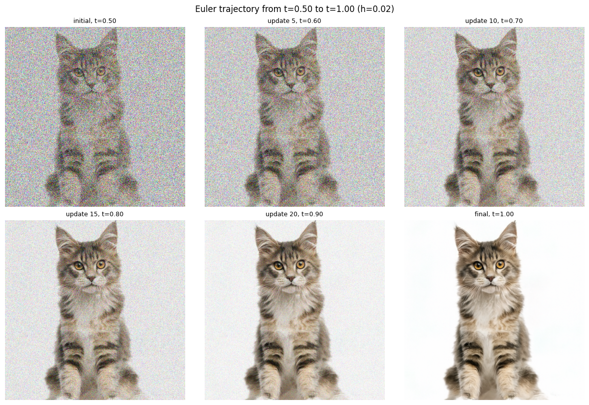
Euler trajectory from $t=0.50$ to $t=1.00$ (initial state, every fifth update, final)
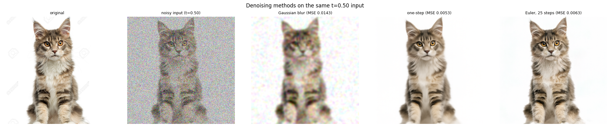
Denoising methods on the same $t=0.50$ input: original, noisy input, Gaussian blur, one-step, Euler
1.6 Image generation from pure noise
Starting from pure Gaussian noise at t = 0 with the generic prompt “a high quality photo”, the model produces human portraits for all five samples, so this prompt favors faces.
However, the quality is inconsistent. Seeds 180, 181, and 183 show distorted anatomy, warped or missing facial features, and odd skin textures, while seeds 182 and 184 are mostly plausible.
Without guidance the samples follow the prompt only loosely, which motivates CFG in Part A2.
 Samples, w = 0
Samples, w = 0
PART A3: CREATIVE APPLICATIONS
3.1 Image-to-Image Editing (SDEdit)
Adding noise up to $t_{start}$ and denoising back to t = 1 projects the image onto the manifold of natural images.
At small $t_{start}$ (0.02–0.06) almost nothing of the input survives, so the model hallucinates unrelated content.
As $t_{start}$ grows toward 0.25–0.50, the layout and fine details return and the result approaches the original.
 Campanile, prompt: "a photograph of the empire state building"
Campanile, prompt: "a photograph of the empire state building"
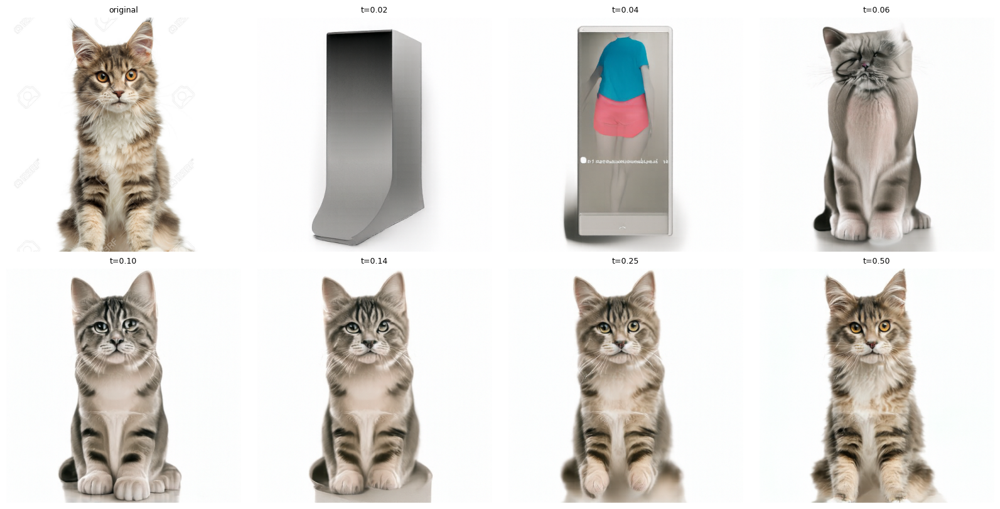
Kitten, prompt: "a photograph of a coyote"
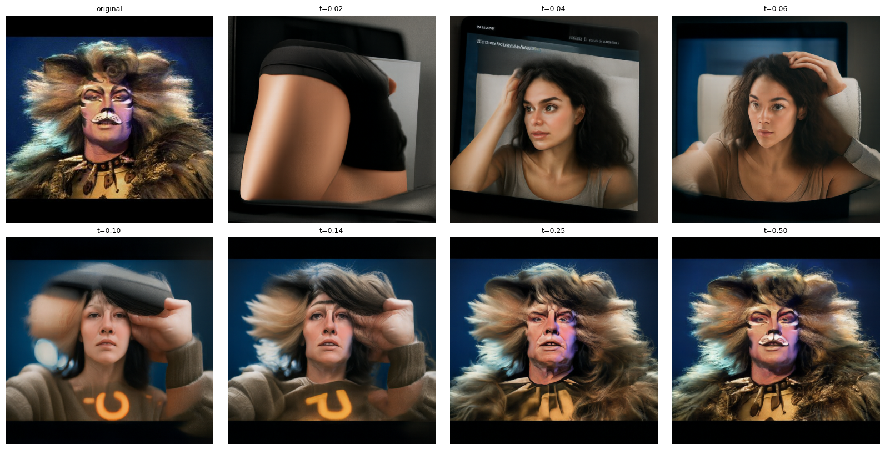
RumTumTugger, prompt: "a photograph of a drag queen"
Edits like these work best on non-realistic inputs, because the denoising step has to push them toward natural images.
I ran the same seven starting times on one image from the web and two of my own drawings, using the prompt “a high quality photo”.
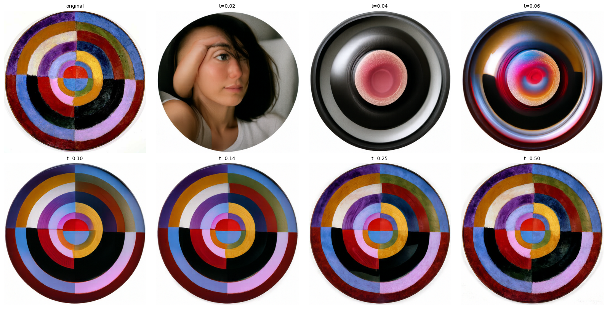
Le Premier Disque by Robert Delaunay
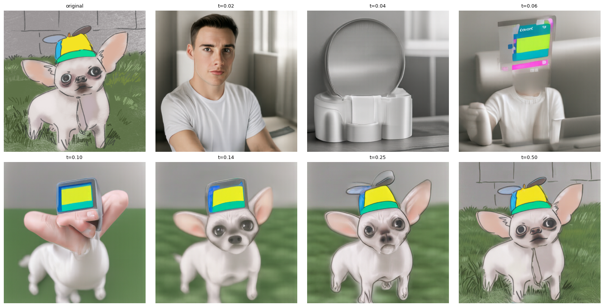
Dog with hat
Across all three, the starting time controls how much of the input is kept.
At $t_{start}$ ≤ 0.06 only coarse color and silhouette survive, and the model reads them as unrelated photographic content.
Around 0.10–0.14 the overall layout returns but the details are reinvented, sometimes badly, as with the hat turning into a screen and Megamind’s face turning into a skull.
By 0.25 the subject is recognizable and the edit mostly adds realism to a drawing’s textures.
At 0.50 little changes. The two drawings needed higher starting times than the painting for their subjects to return,
because flat colors and simple outlines give the model less structure to hold onto.
3.2 Text-Guided Image Editing
Using the same procedure with a target prompt, $t_{start}$ controls the trade-off between prompt and input.
At very small $t_{start}$ the prompt dominates and the original geometry is lost, for example a free-standing Empire State Building in the Campanile edit (t = 0.02) or a coyote in a new pose in the kitten edit.
At intermediate values (t ≈ 0.10–0.14) the result keeps the input’s overall layout while taking on the prompt’s content, such as a Campanile-shaped tower with Empire State-style texture, or a coyote posed like a kitten.
At t = 0.25 the prompt’s content is still visible (the coyote face, the Empire State texture); by t = 0.50 the result is mostly the original.
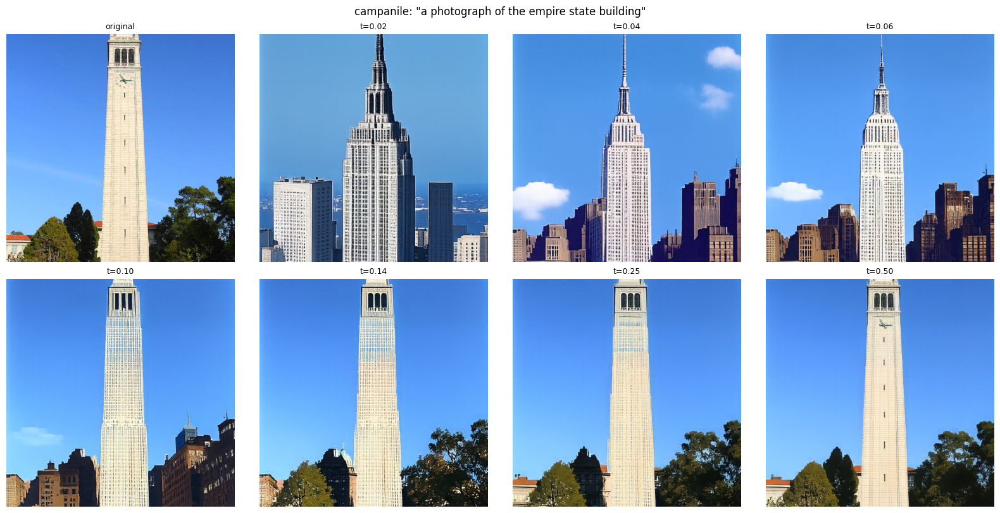
Campanile to Empire State Building
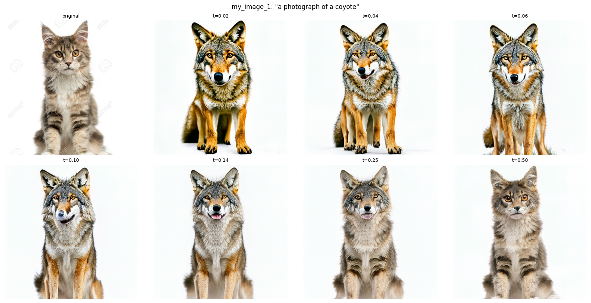
Kitten to Coyote
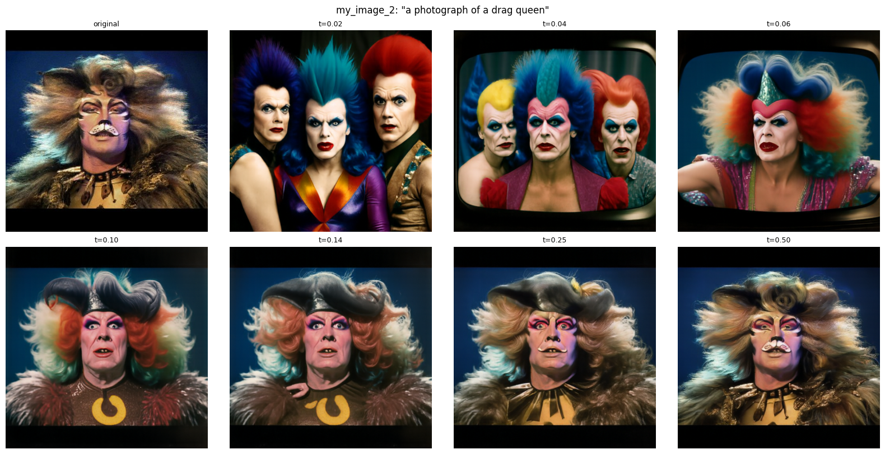
RumTumTugger to Drag Queen
3.3 Visual Anagrams (Optical Illusions)
Visual anagrams are created by predicting velocity vector $v_1$ for prompt $p_1$ on $x_t$, and velocity vector $v_2$ for prompt $p_2$ on $x_t$ flipped upside down $180^\circ$. The composite velocity vector $v = \frac{v_1 + \text{flip}(v_2)}{2}$ drives sampling to create dual-view optical illusions:
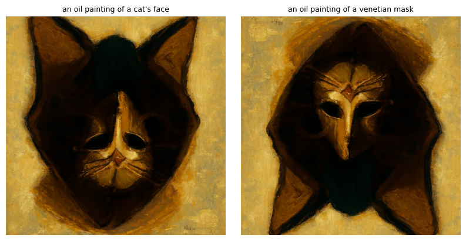
Visual Anagram "Cat" (upright) and "Venetian Mask" (rotated 180 degrees)
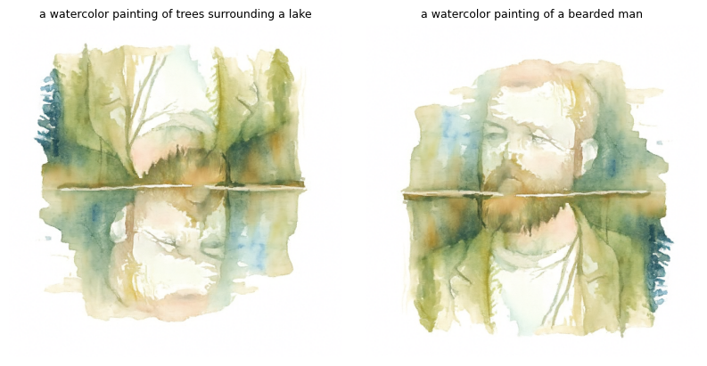
Visual Anagram "Lake" (upright) and "Man" (rotated 180 degrees)
3.4 Hybrid Images (Factorized Diffusion)
Hybrid images combine low spatial frequencies from velocity prediction $v_1$ (Prompt 1) with high spatial frequencies from $v_2$ (Prompt 2) using Gaussian blurring ($\sigma = 16, k = 265$):
$$v = f_{\text{lowpass}}(v_1) + f_{\text{highpass}}(v_2)$$
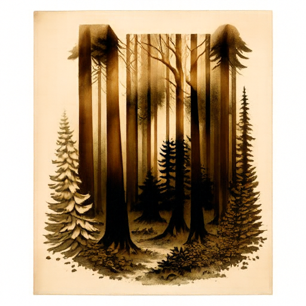
Near view “[Forest]” (high frequencies)
Distant view “[Bear]” (low frequencies)
Bear and Forest
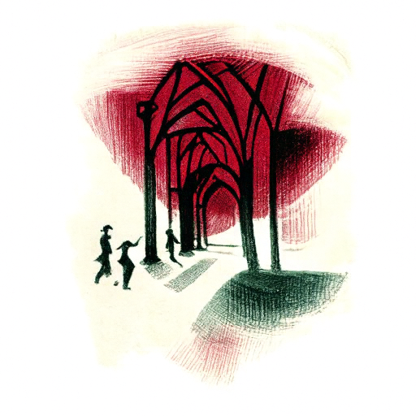
Near view “[Corridor]” (high frequencies)
Distant view “[Rose]” (low frequencies)
Rose and Corridor
PART B1: SINGLE-STEP DENOISING UNET
1.1 Architecture & Noising Process
We construct a UNet architecture comprising ConvBlocks, DownBlocks ($2\times$ downsampling), UpBlocks ($2\times$ upsampling), and skip connections. We train the network to remove noise from images corrupted with $\sigma = 0.5$ additive Gaussian noise ($z = x + \sigma \epsilon$).
1.2 Training & Results ($\sigma = 0.5$)
The denoiser $D_\theta(z)$ is trained with Adam ($\text{lr}=10^{-4}$, batch size 256, hidden dimension $D = 128$) for 5 epochs with MSE loss $\|D_\theta(z) - x\|^2$.
The loss drops sharply in the first few hundred steps and then plateaus at roughly 0.01.
The figures below show the training loss and the results on the first 10 test digits, using the same noisy inputs ($\sigma = 0.5$) after epoch 1 and epoch 5.
After epoch 1 the denoised digits are already clean and recognizable, and by epoch 5 the strokes are sharper with fewer artifacts.
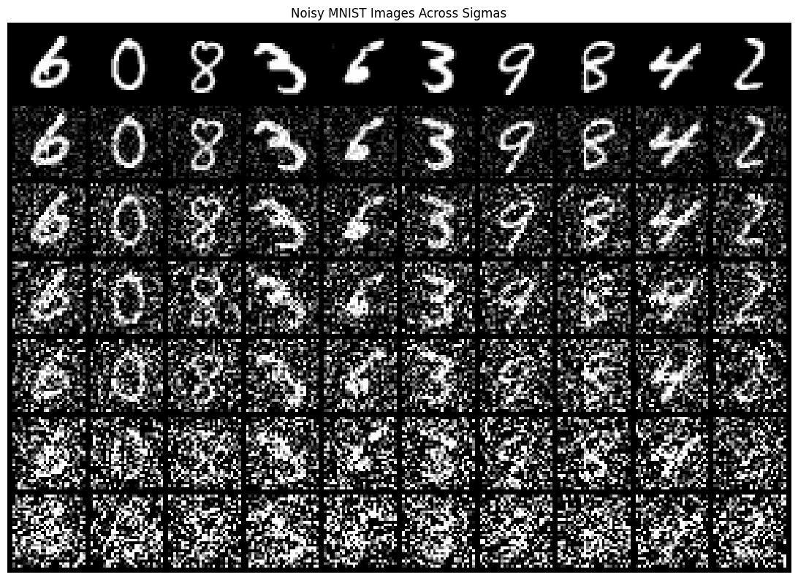
Noisy MNIST digits (rows, top to bottom: $\sigma = 0.0, 0.2, 0.4, 0.5, 0.6, 0.8, 1.0$)
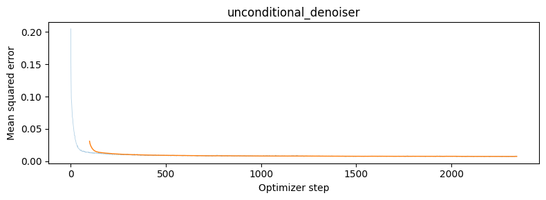
Training loss for $\sigma = 0.5$
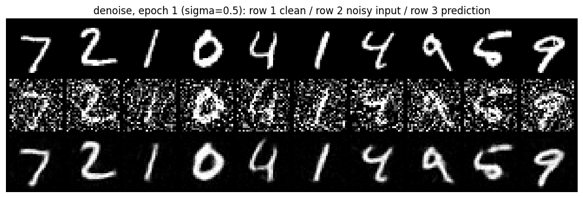
After epoch 1, $\sigma = 0.5$ (rows: clean / noisy input / prediction)
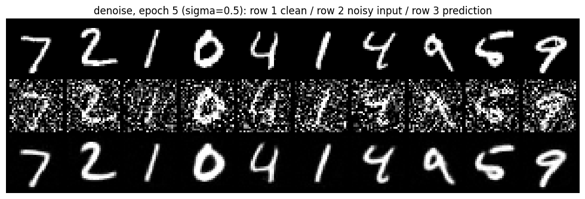
After epoch 5, $\sigma = 0.5$ (rows: clean / noisy input / prediction)
1.2.2 Out-of-Distribution Noise Testing
We evaluate the trained denoiser on noise levels it was not trained on ($\sigma_{\text{train}} = 0.5$).
Rows, top to bottom, use $\sigma = 0.0, 0.2, 0.4, 0.5, 0.6, 0.8, 1.0$.
The denoiser works well for $\sigma \le 0.6$ and the digits are recovered cleanly.
At $\sigma = 0.8$ strokes start to break up and distort, and at $\sigma = 1.0$ many digits are unreadable.
Since training only saw $\sigma = 0.5$, the model has no experience with heavier noise and cannot reliably separate signal from noise there.
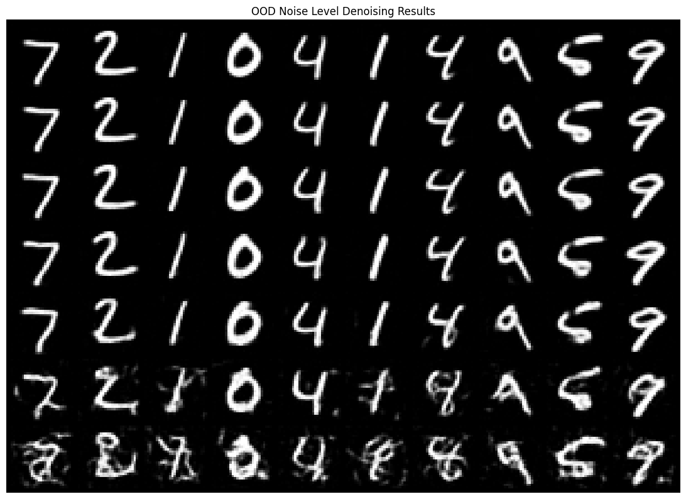
Out-of-distribution denoising (rows: $\sigma = 0.0, 0.2, 0.4, 0.5, 0.6, 0.8, 1.0$)
1.2.3 Denoising Pure Noise
I trained a fresh denoiser (same UNet, $D = 128$, Adam with $\text{lr}=10^{-4}$, batch size 256, 5 epochs) to map pure Gaussian noise to a clean digit with MSE loss.
The input is independent of the target, so the network cannot tell which digit it should output, and the loss-minimizing prediction is the average of all training digits.
After both 1 and 5 epochs, every output is the same blurry, centered, digit-like blob, regardless of the input noise, and it matches the mean image of the training set (shown last).
The loss flattens almost immediately at about 0.07, roughly the average per-pixel variance of MNIST around its mean.
That variance is the irreducible error for an input with no information about the target, so more training cannot lower it.
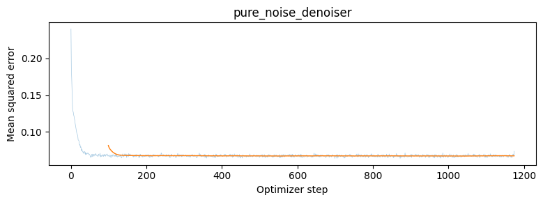
Training loss, pure-noise denoiser
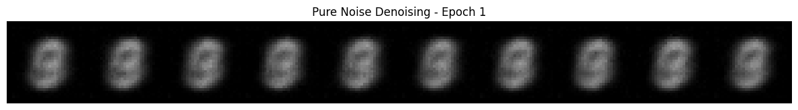
Pure noise denoising, epoch 1
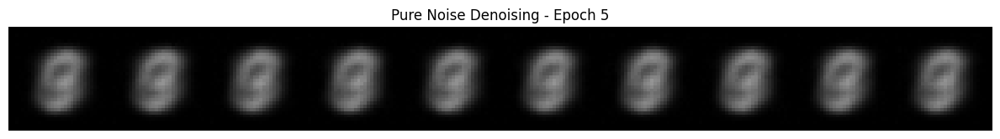
Pure noise denoising, epoch 5
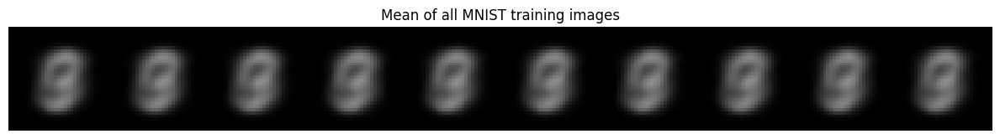
Mean of all MNIST training images
PART B2: FLOW MATCHING FROM SCRATCH
2.1 Time-Conditioned Flow Matching UNet
So how exactly do we condition our UNet on $t$? We condition on t using an FCBlock that contains two linear layers and replace the unflattening and up1 operations in our original UNet with a modulated unflatten and up1 that multiplies by the output of the FCBlock. In this way, we can introduce $t$ to our UNet.
2.2 Class-Conditioned UNet & Classifier-Free Guidance
To implement the training loop, we first have to implement two algorithms, time_fm_forward and time_fm_sample. time_fm_forward takes in the UNet, samples $t \sim \mathcal{U}[0, 1]$ and $x_0 \sim \mathcal{N}(0, \mathbf{I})$ and computes an intermediary state $x_t = (1-t)x_0 + tx_1$. From there, we make a prediction using the UNet $\text{unet}(x_t, t)$ and compute the MSE of the prediction and ground truth velocity $x_1 - x_0$.
To create the training loop, we use the following settings:
- Hidden Dimension: $D = 64$
- Timesteps: 50 time steps
- Learning Rate: $10^{-2}$ (with exponential decay schedule)
- Epochs: 10 training epochs
- Batch Size: 64
As we can see from the loss plot, as the number of iterations increases, there is a sharp decline in loss at the beginning, then a relatively flat development period after.
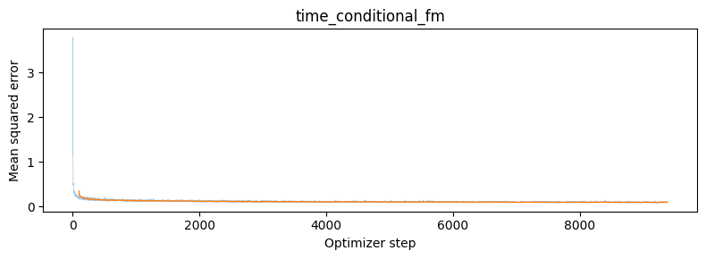
Training loss of the time-conditioned UNet over 10 epochs
2.3 Sampling from the Time-conditioned UNet
Sampling uses Euler integration, $x_{t+h} = x_t + h·u_θ(x_t, t)$, over num_ts steps.
At epoch 1 most samples aren’t coherent digits.
At epoch 5 many are recognizable (3s, 6s, 7s) with a noticeable number of malformed ones.
By epoch 10 the proportion of legible digits is much higher with fewer artifacts.
(num_ts = 50, Euler, exponential LR)
2.4 Implementing a Class-Conditioned UNet
In this section, we repeat the same procedure as in the previous part, but instead of only conditioning on $t$, we can also condition the model on the class of the number $c$.
We can do this by implementing a modified version of the previous part where we use modulated unflattening/up1 steps by doing:
$$\text{unflatten}_{\text{mod}} = c_1 \cdot \text{unflatten} + t_1 \quad \text{and} \quad \text{up1}_{\text{mod}} = c_2 \cdot \text{up1} + t_2$$
We pass $c$ through the same FCBlock as in 2.1. It is important to note that since $c$ comes in shape $(N,)$, we need to use torch.nn.functional.one_hot(c, num_classes=10) in order to transform it into shape $(N, num_{classes})$ for use in the FCBlock, where it is then turned into shapes $(N, D, 1, 1)$ and $(N, 2D, 1, 1)$.
Additionally, according to the spec, we need to implement dropout. Since we want the model to work even without conditioning, we have to pass in some amount of training data (set to 10%) without a class conditioning label (one hot encoding set to 0) manually. We can do this inside of our class_fm_forward method.
The class label is one-hot encoded with shape (N, num_classes) and passed through FCBlocks,
giving c1 and t1 with shape (N, 2D, 1, 1) to modulate the unflatten output, and c2 and t2 with shape (N, D, 1, 1) to modulate up1.
I use unflatten_mod = c1·unflatten + t1 and up1_mod = c2·up1 + t2.
To support classifier-free guidance, I zero the one-hot vector for 10% of training samples with a per-sample mask of shape (N,).
2.5 Training the Class-Conditioned UNet
To implement our training loop, we need to implement the class_fm_forward method. This method is analogous to part 2.2, but includes both an input of the class label while training and a dropout feature where the one-hot encoding is set to 0 10% of the time. We can implement this by creating a mask of shape $(N,)$ with 0 10% of the time and 1 the other 90%.
2.6 Sampling from the Class-Conditioned UNet
To implement the inference part of our model, we need to implement the class_fm_sample method. This method is analogous to part 2.3, but instead changes the Euler sampling process into using Classifier-Free Guidance (CFG) where:
$$v_{\text{cfg}} = v_{\text{uncond}} + \gamma (v_{\text{cond}} - v_{\text{uncond}})$$
This pushes the flow in the direction toward the class in question (using $\gamma = 5.0$). Below are the results when sampled across 1, 5, and 10 epochs (showing 4 instances of each digit 0–9):
Ablation: Constant Learning Rate vs. Exponential Scheduler
This time around, we also want to compare results with no scheduler and with a scheduler. First, what is a scheduler? When we conduct training with a starting learning rate, we want to shrink the learning rate as we progress through each epoch in order to make more precise and fine adjustments. To do this, our previously used Exponential scheduler used a gamma value of $\gamma = 0.1^{1/\text{num_epochs}}$.
Instead of using this, we can simply go ahead and use a constant learning rate of $10^{-3}$, since with a scheduler after 10 epochs the learning rate decays to about $10^{-3}$ as well. To compensate for a lower learning rate at the start, we bumped up the number of epochs from 10 to 15 as well.
In the end, the constant learning rate kept the same performance. Its epoch 1 samples are already cleaner than the scheduled run's, and by epoch 10 the two runs look comparable, so the extra five epochs made little visible difference.